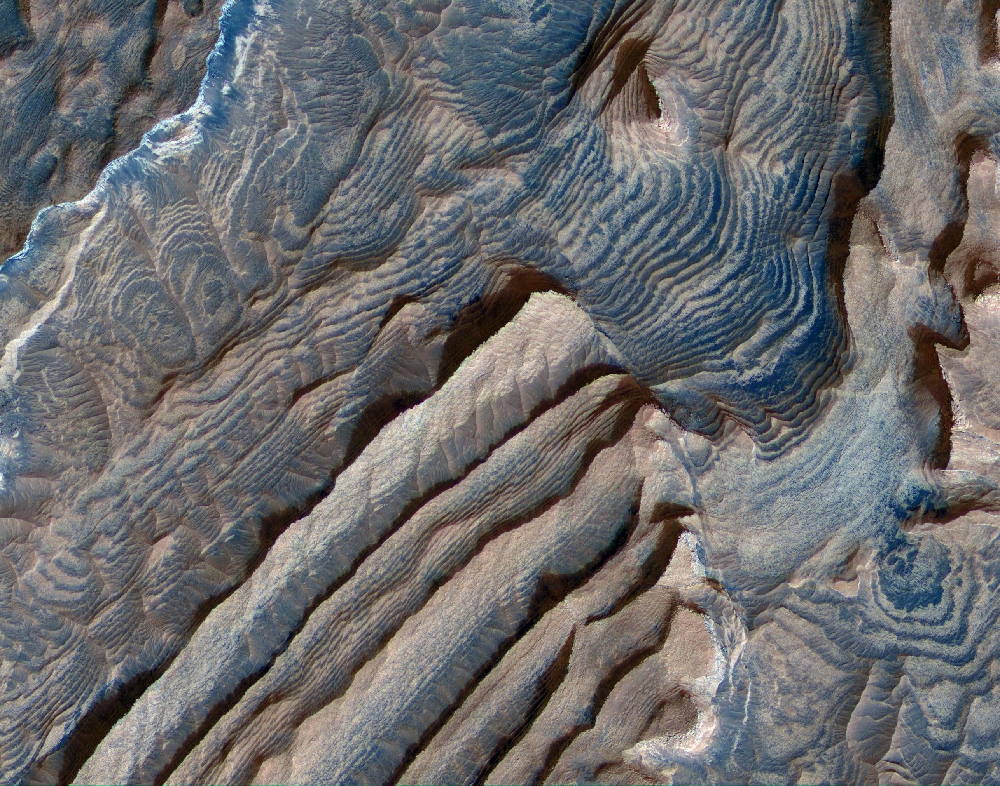

Texture refers to the surface quality in a work of art. We associate textures with the way that things look or feel. Everything has some type of texture. We describe things as being rough, smooth, silky, shiny, fuzzy and so on. Some things feel just as they appear; this is called real or actual texture. Some things look like they are rough but are actually smooth. Texture that is created to look like something it is not, is called visual or implied texture.
